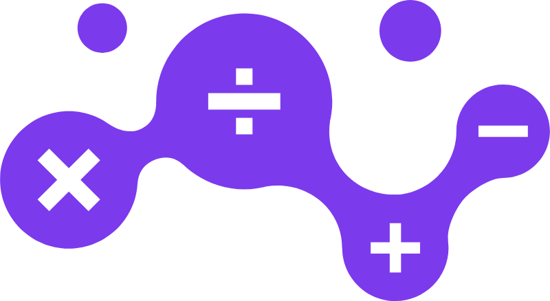

Maxematics · Identity study · July 2026
A focused study of the Maxematics wordmark — how it reads at real sizes, why the name needs its first three letters to stand apart, and ten treatments tested against that goal. Ends with one recommendation and the system for using it everywhere else.
You asked whether max should be visually separated from ematics. It's the right question, and it's worth answering carefully — this is the one asset that appears on every page, every email signature, every flyer, and every browser tab for the next several years.
Our answer is yes, separate it — but not by making it bigger. The first instinct is to set MAX in capitals. We built that version, put it next to the logomark, and it confirmed exactly what you noticed on your own: it collides. Below is why that happens, and what we did instead.
"Maxematics" only works if a reader catches max inside it. If they don't, the eye auto-corrects to "mathematics" and the joke — along with the founder's name — disappears. A visitor who never notices Max is in the name has lost the single most personal thing about this practice. That's the actual problem worth solving; it isn't decoration.
Set entirely in lowercase, the logotype has a single horizontal band of weight — calm, and a quiet partner to a logomark that is deliberately loud. Capitalising MAX raises three letters to cap height and puts a second stack of mass directly beside the mark's tallest point. Two loud elements, 8px apart, competing. Your read was correct.

maxematics. CollisionThe navigation bar renders the logotype at roughly 20px tall. At that size, contrast in weight loses most of its effect and contrast in colour loses more still — and both vanish entirely in a black-and-white flyer, an embroidered polo, or a fax-quality PDF. Any solution that depends on being able to see a subtle difference is a solution that only works on your monitor.
Emphasise nothing. Substitute one glyph.
There are only two ways to make part of a word stand apart, and they behave very differently.
Change the case, the weight, or the colour of max. Everyone understands it instantly; it's how SS&C Blue Prism, FedEx and hundreds of others handle a two-part name. The cost is that all three levers work by adding visual weight — the exact resource already spent on the logomark. These are legitimate options, and we've built them properly rather than dismissing them.
Leave every letter at the same size, weight and colour — and replace one of them with a different form. This is the move behind the Anthropic wordmark you pointed us to: the final i is stripped of its dot and tilted into a backslash. Nothing is emphasised, nothing is enlarged, and yet the mark becomes unmistakable and impossible to set by accident in a default font. It costs no space and no ink. For a wordmark that has to sit beside a busy logomark, this is the more disciplined tool — and Maxematics happens to contain the perfect candidate letter.
The candidate is the x. In max, the x is both the last letter of the name and, in mathematics, the multiplication sign and the universal symbol for the unknown quantity — the thing a student is here to solve for. It is also already drawn inside your logomark, as one of the four operators. Replacing the letter x with a true × changes nothing about the wordmark's size, weight, case or colour, and yet it marks where max ends, states the category without a tagline, and ties the logotype to the mark beside it. One glyph, three jobs.
Each is shown at true navigation size on both light and dark, since the site uses both. For every option we've recorded what it achieves and what it costs — including for the ones we don't recommend, because the trade-off is the useful part.
Option 06 — the × substitution, set in the brand violet. It is the only treatment that separates max without spending any visual weight, and the only one that gets stronger rather than weaker as the logo gets smaller.
Recommended logotype
01
Same case, same weight, same x-height as every other letter. The eye stops on max because the form changed, not because it got heavier — so the logomark keeps its role as the loud element.
02
A multiplication sign inside the name states the category before anyone reads a word of copy. That work is currently being done by the logomark alone; now the two share it.
03
The × is a bolder, simpler shape than a lowercase x, so it holds at 16px and in a single colour. In black-and-white print the differentiation is still fully intact — weight and colour options are not.
04
The logotype is now a drawn asset rather than a word set in a font. That is what makes a wordmark defensible, recognisable, and worth protecting.
If you'd prefer it quieter: Option 05 is the same substitution in the standard ink colour — all of the structural benefit, none of the accent. If you'd prefer it more conventional: Option 03 (weight split, 700/500) is the safest boardroom answer and remains a perfectly good mark; we'd simply be trading distinctiveness for familiarity.
A logo isn't one image — it's a small family of arrangements, each built for a different space. Here is the recommended mark rendered in every configuration the practice is likely to need, so nothing has to be improvised later by whoever is making the next flyer.
Primary lockup — horizontal
Website header, email signature, letterhead. The default in almost every case.
Stacked lockup
Narrow columns, flyer footers, tote bags, anywhere width is short and height is free.
Reversed — dark backgrounds
Site footer, dark flyers, presentation covers. The × lifts to the soft violet to hold contrast.
Single colour
Photocopies, stamps, embroidery, faxed forms, one-colour print. The differentiation survives.
Wordmark alone
Where the logomark would be redundant — invoice headers, document footers, watermarks.
Clear space
Keep a margin equal to the height of one lowercase x on all four sides. Nothing crosses that boundary.
The real test of a logotype is the smallest place it has to live. Below is the recommended mark at every size it will actually be used at.
In a browser tab or a profile circle there is no room for a wordmark at all — but the × now carries the brand on its own. Shown at true pixel size.
Reply with the option number you'd like to proceed with — or ask us to push any of the alternates further. On approval we produce the following, and the site is updated the same day.
The approved lockups drawn as SVG and PDF — horizontal, stacked, wordmark-only and mark-only, in full colour, reversed and single ink.
16, 32, 48, 180 and 512px, plus the rounded social avatar, correctly optimised so the × stays sharp in a browser tab.
Header and footer updated across every page, with the mark rendered as vector so it stays crisp on any screen.
Clear space, minimum sizes, colour values and the do/don't list — the single page you hand to a printer, a school, or anyone making a flyer on your behalf.